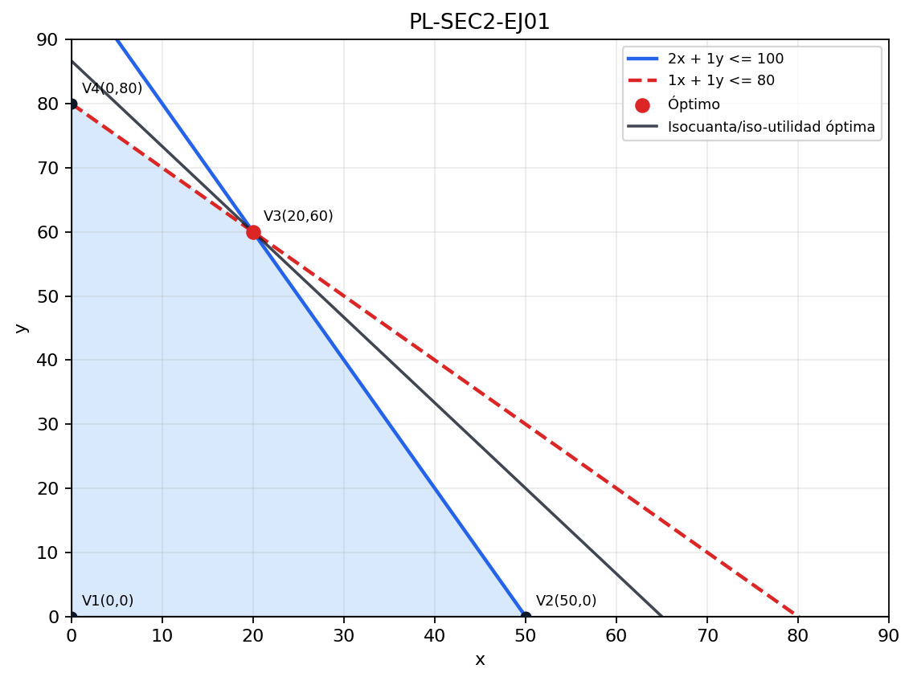
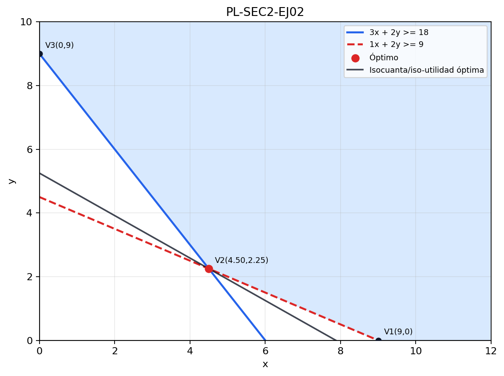
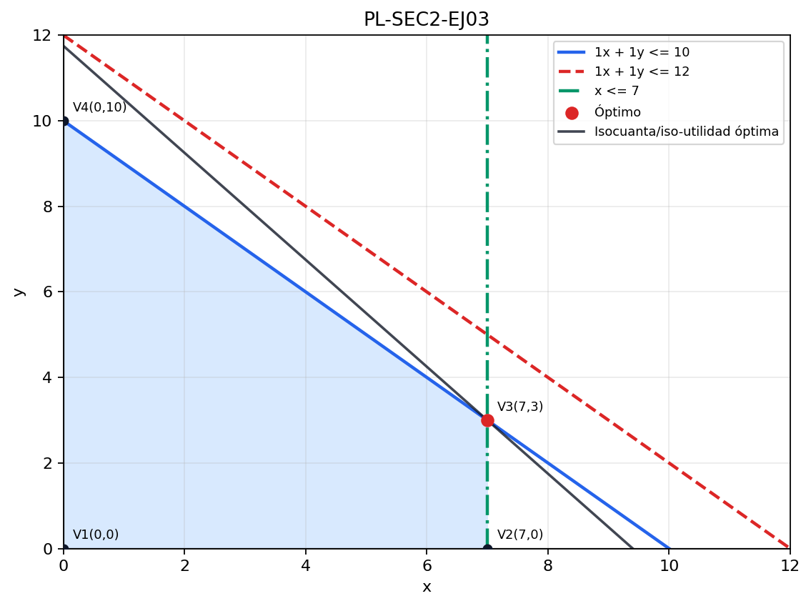
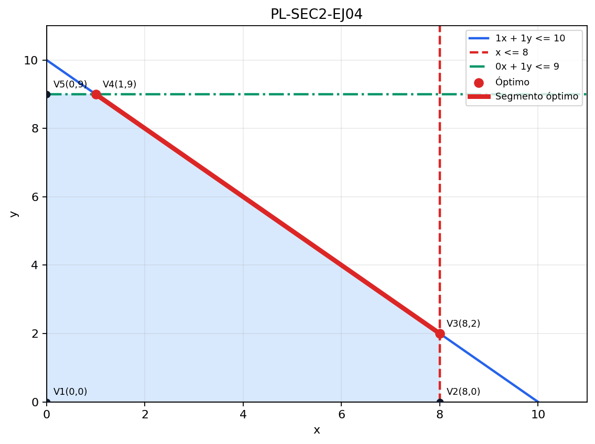
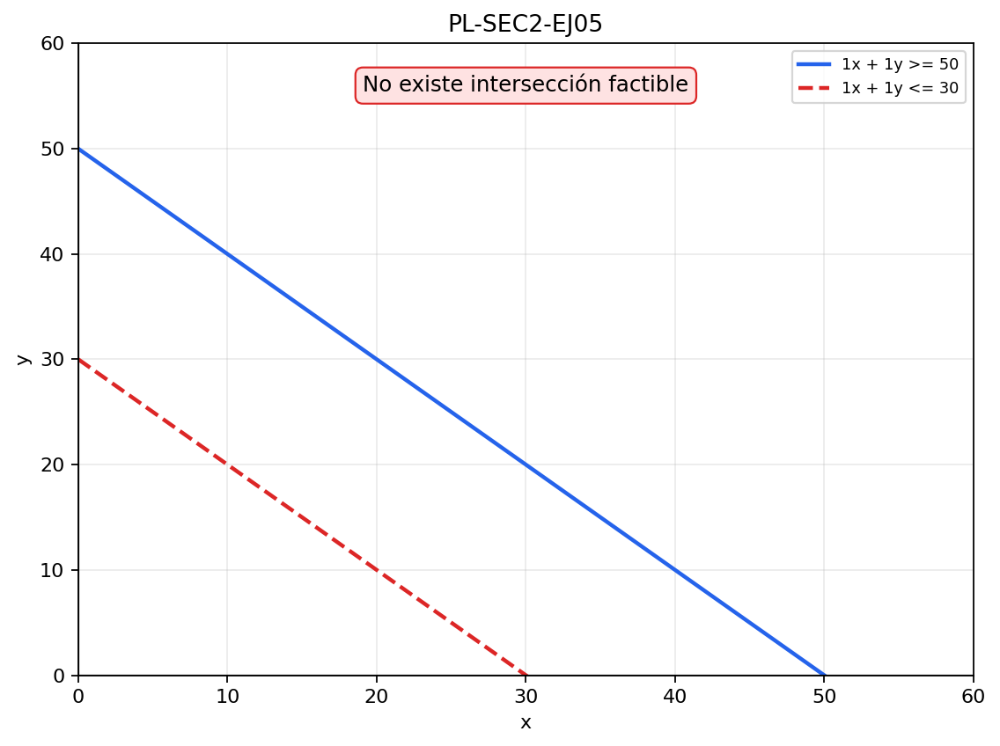
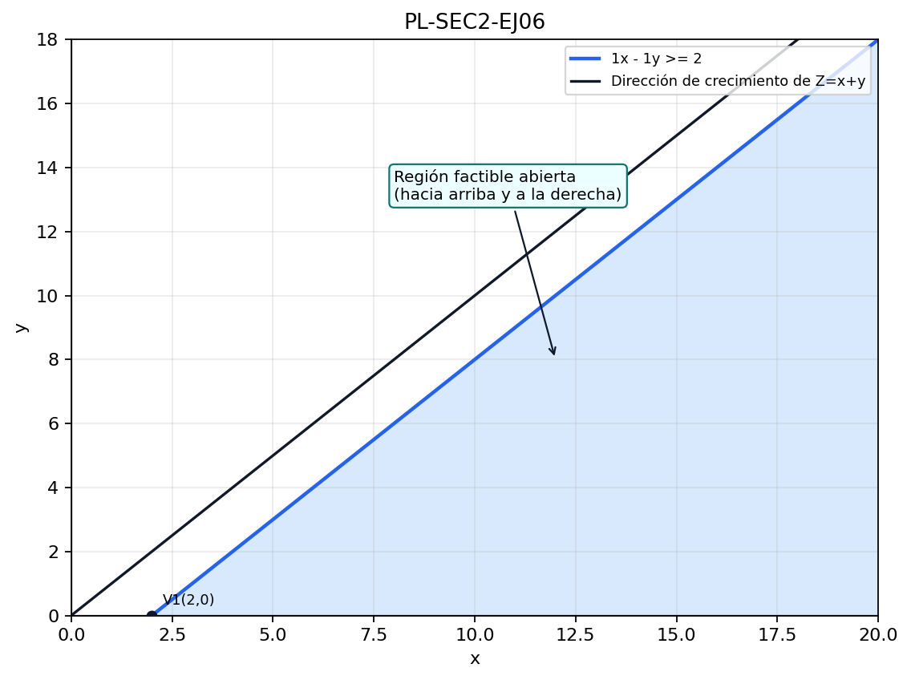
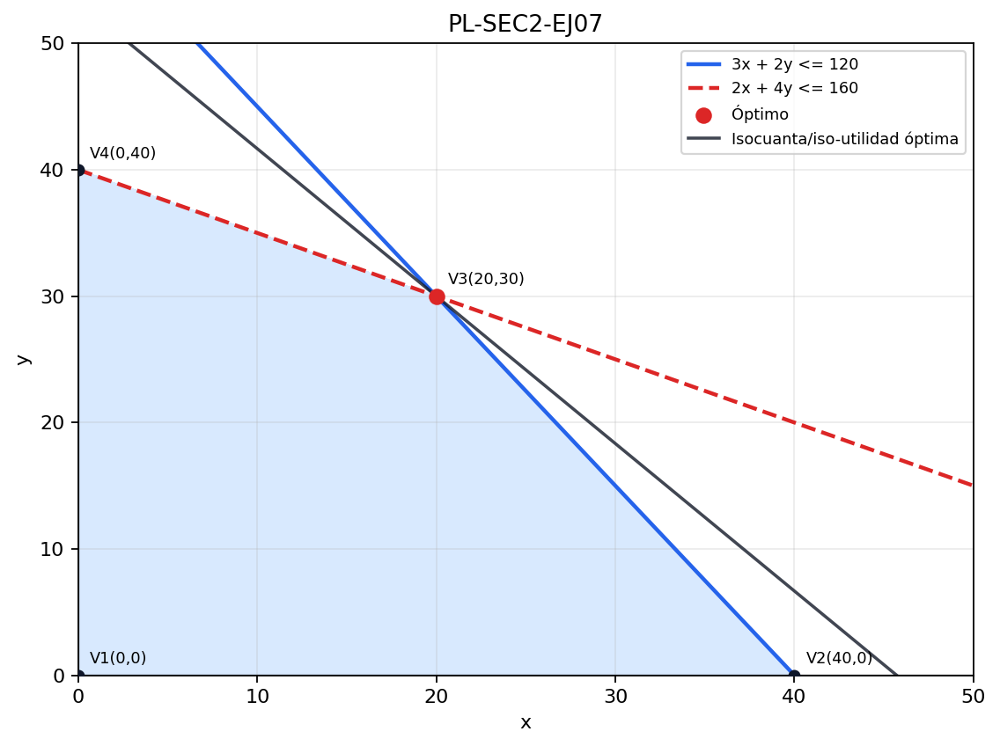
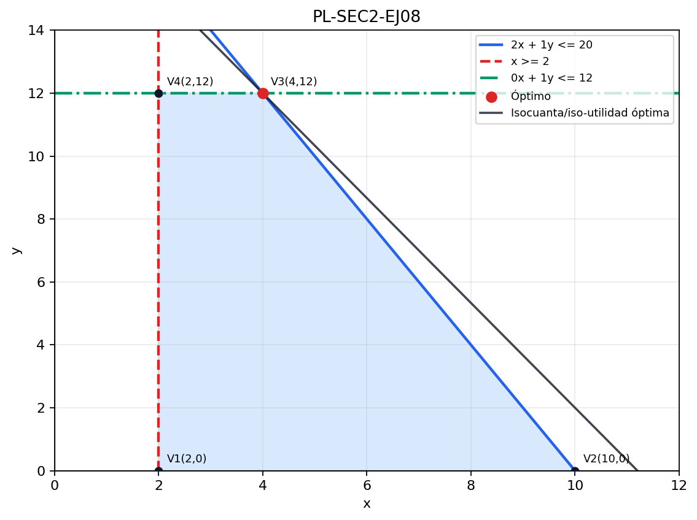
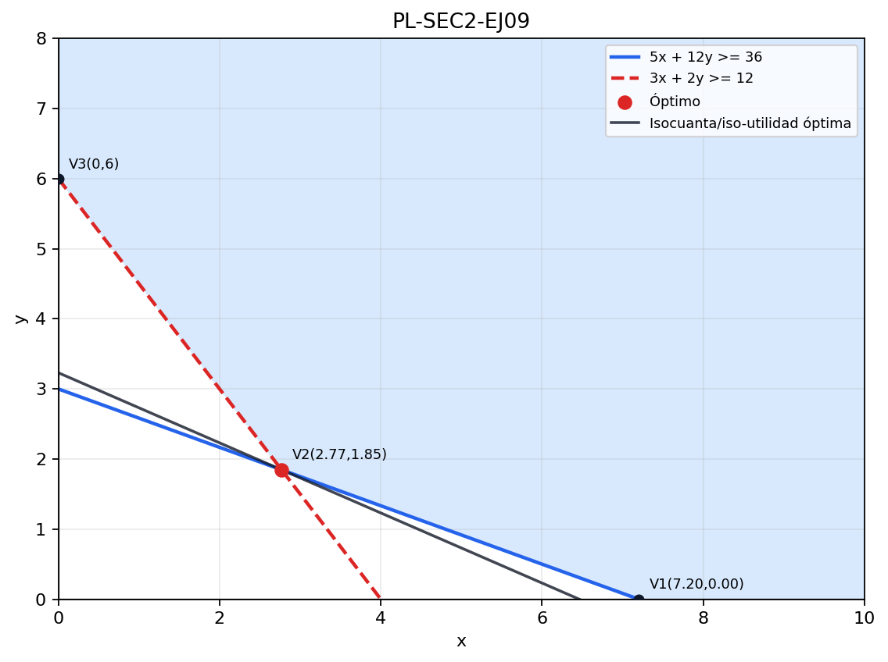
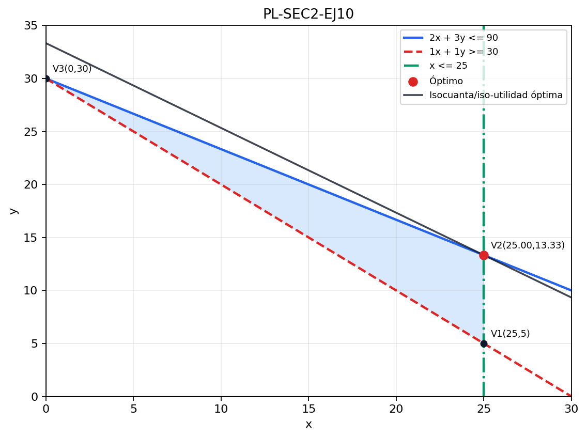

Competencia: Resolver, interpretar y verificar modelos de Programación Lineal con dos variables de decisión mediante representación geométrica, identificación de región factible, análisis de vértices y evaluación de la función objetivo.
¿Qué es el método gráfico y cuándo se usa?
El método gráfico es la técnica clásica para resolver problemas de Programación Lineal con exactamente dos variables de decisión. Su valor pedagógico es enorme porque permite ver la geometría del problema: cada restricción genera un semiplano, el conjunto de todas las soluciones factibles forma una región factible y la función objetivo se interpreta como una familia de rectas paralelas. La solución óptima, si existe y el problema está acotado, se encuentra en uno o varios vértices de la región factible.
Idea clave: el método gráfico no es solo “dibujar rectas”; es una forma de entender por qué la optimización lineal funciona. La gráfica explica qué restricciones son activas, cuándo un modelo es infactible, por qué pueden existir óptimos múltiples y qué significa que un problema sea no acotado.
Este método se utiliza principalmente en cursos introductorios y para modelos pequeños, por ejemplo: mezcla de productos, problemas de dieta, campañas publicitarias simples, producción de dos artículos, asignación de recursos entre dos actividades y análisis conceptual de sensibilidad.
Fundamentos teóricos del método gráfico
1. Variables y ejes
Si el modelo tiene dos variables de decisión, por ejemplo x e y, cada una puede representarse en un eje cartesiano. Todo punto
(x,y)
representa una solución candidata.
2. Restricciones como rectas y semiplanos
Cada restricción lineal del tipo ax + by \le c, ax + by \ge c o ax + by = c puede representarse inicialmente como una recta. Luego se determina cuál lado de la recta es factible usando un punto de prueba, normalmente
(0,0)
si no pertenece a la recta.
3. Región factible
La región factible es la intersección de todos los semiplanos que satisfacen simultáneamente las restricciones, incluyendo no negatividad. Geométricamente es el conjunto de todas las soluciones permitidas por el problema.
4. Teorema del punto extremo
En Programación Lineal, si existe solución óptima y la región factible es no vacía y acotada, entonces al menos una solución óptima se encuentra en un vértice o punto extremo de la región factible. Por eso el método gráfico se enfoca en hallar y evaluar vértices.
5. Función objetivo
La función objetivo también es una recta. Para maximizar, se desplaza paralelamente en la dirección en que aumenta su valor; para minimizar, se desplaza en la dirección en que disminuye. El último punto de contacto con la región factible determina el óptimo.
6. Casos especiales
Óptimo único: la recta objetivo toca la región en un solo vértice.
Óptimos múltiples: la recta objetivo es paralela a un lado activo y coincide con un segmento de la región factible.
Infactibilidad: no existe región común que cumpla todas las restricciones.
No acotado: la región existe, pero la función objetivo puede mejorar indefinidamente.
Restricción redundante: una restricción no cambia la región factible ni la solución.
Guía de aprendizaje paso a paso
Leer y traducir el problema. Identifica la decisión real: qué cantidades, recursos o actividades se deben determinar. Define variables con significado económico y unidades claras.
Formular la función objetivo. Establece si se desea maximizar utilidad, ingresos o cobertura, o minimizar costo, tiempo o desperdicio.
Formular las restricciones. Cada limitación del problema debe expresarse algebraicamente. Revisa que todas las unidades sean consistentes.
Convertir cada restricción en ecuación de frontera. Reemplaza temporalmente \le o \ge por = para dibujar la recta límite.
Hallar interceptos o puntos suficientes para graficar. Lo más habitual es usar dos interceptos: poner x=0 y luego y=0. Si hay restricciones verticales u horizontales, se interpretan directamente.
Determinar el semiplano factible. Usa un punto de prueba. Si satisface la desigualdad, el lado donde está dicho punto es factible; si no, el lado opuesto lo es.
Construir la región factible. Superpone todos los semiplanos y conserva únicamente la zona común.
Identificar vértices. Encuentra las intersecciones relevantes de fronteras activas y los cortes con ejes cuando correspondan.
Evaluar la función objetivo en los vértices. Calcula el valor de la FO en cada punto extremo factible.
Interpretar y verificar. Explica el significado de la solución en el contexto del problema y comprueba numéricamente que cumple todas las restricciones.
Error frecuente: muchos estudiantes dibujan correctamente las rectas, pero sombrean el lado equivocado, olvidan la no negatividad o evalúan un punto que en realidad no pertenece a la región factible. Siempre verifica cada vértice antes de evaluar la función objetivo.
Buenas prácticas para resolver por método gráfico
Usa escala uniforme y rotula claramente los ejes con sus unidades.
Indica sobre cada recta su ecuación o una etiqueta inequívoca.
Marca visualmente los vértices con coordenadas y destaca el óptimo.
Si el problema es de minimización, explica por qué el óptimo suele ser el punto factible “más cercano” al origen en la dirección de reducción de la FO, aunque no necesariamente sea el más cercano en distancia euclidiana.
Siempre diferencia recta de frontera de semiplano factible.
Cuando aparezca una restricción redundante, indícalo explícitamente: es una excelente oportunidad de interpretación gerencial.
10 ejemplos desarrollados
Cada ejemplo incluye planteamiento, formulación, gráfico completo, procedimiento paso a paso, solución y verificación. Los gráficos fueron preparados para mostrar la región factible, las rectas de restricción, los vértices y la ubicación del óptimo.
Planteamiento. Una fábrica produce dos artículos, A y B. Cada unidad de A genera una utilidad de 40 u.m. y cada unidad de B una utilidad de 30 u.m. El producto A requiere 2 horas de máquina y 1 hora de ensamble. El producto B requiere 1 hora de máquina y 1 hora de ensamble. La planta dispone de 100 horas de máquina y 80 horas de ensamble por semana. ¿Cuántas unidades de cada producto deben fabricarse para maximizar la utilidad semanal?
Producto
Utilidad
Horas de máquina
Horas de ensamble
A
40
2
1
B
30
1
1
Disponibilidad
—
100
80
Formulación
x = unidades de A; y = unidades de B.
Max Z = 40x + 30y 2x + y ≤ 100 x + y ≤ 80 x,y ≥ 0

Gráfico del problema: la región sombreada es el conjunto factible; el punto rojo señala la solución óptima.
Procedimiento detallado
Recta 1:2x+y=100. Interceptos: si x=0, entonces y=100; si y=0, entonces x=50.
Recta 2:x+y=80. Interceptos: (0,80) y (80,0).
Semiplanos: como ambas son de tipo \le, se conserva el lado que contiene al origen.
Región factible: queda delimitada por los ejes y las dos rectas.
Vértices:(0,0), (50,0), (20,60) y (0,80). La intersección se obtiene resolviendo: 2x+y=100 y x+y=80. Restando, x=20; sustituyendo, y=60.
Evaluación de la FO:
Vértice
Valor de Z
(0,0)
0
(50,0)
2000
(20,60)
2600
(0,80)
2400
Solución e interpretación
La solución óptima es x = 20 y y = 60, con utilidad máxima Z = 2600. La empresa debe producir 20 unidades del producto A y 60 del producto B. En esta solución se utilizan por completo los dos recursos críticos, lo que indica que ambas restricciones son activas.
Verificación
2(20)+60=100 y 20+60=80. Ambas restricciones se satisfacen exactamente.
PL-SEC2-EJ02
Minimización acotada de dieta
Planteamiento. Un nutricionista desea formular una combinación de dos alimentos, A y B, al menor costo posible. Cada porción del alimento A cuesta 2 u.m., aporta 3 unidades de proteína y 100 calorías. Cada porción del alimento B cuesta 3 u.m., aporta 2 unidades de proteína y 200 calorías. La dieta debe aportar al menos 18 unidades de proteína y 900 calorías.
Alimento
Costo
Proteína
Calorías
A
2
3
100
B
3
2
200
Requerimiento mínimo
—
18
900
Formulación
x = porciones de A; y = porciones de B.
Min C = 2x + 3y 3x + 2y ≥ 18 100x + 200y ≥ 900 x,y ≥ 0

En problemas de minimización con restricciones del tipo “al menos”, la región factible suele ubicarse por encima de las rectas de frontera.
Procedimiento detallado
Se simplifica la restricción calórica dividiendo entre 100: x + 2y \ge 9.
Se grafican las rectas de frontera 3x+2y=18 y x+2y=9.
Como ambas restricciones son de tipo \ge, la región factible se encuentra del lado opuesto al origen.
Se calculan los vértices candidatos: (9,0), (0,9) y la intersección de ambas rectas.
La intersección se obtiene resolviendo: 3x+2y=18 x+2y=9 Restando: 2x=9, por tanto x=4.5 y y=2.25.
Evaluación del costo: C(9,0)=18, C(0,9)=27, C(4.5,2.25)=15.75.
Solución e interpretación
La combinación de menor costo es 4.5 porciones de A y 2.25 porciones de B, con costo mínimo 15.75 u.m. La solución mixta es más eficiente que usar solo un alimento, porque balancea el bajo costo del alimento A con el mayor contenido calórico del alimento B.
Verificación
3(4.5)+2(2.25)=18 proteínas y 100(4.5)+200(2.25)=900 calorías.
PL-SEC2-EJ03
Restricción redundante
Planteamiento. Una empresa busca maximizar Z = 5x + 4y sujeta a tres restricciones: x+y \le 10, 2x+2y \le 24 y x \le 7. Se desea resolver el problema e identificar si alguna restricción es redundante.
Formulación
Max Z = 5x + 4y x + y ≤ 10 2x + 2y ≤ 24 x ≤ 7 x,y ≥ 0

La recta 2x+2y=24 equivale a x+y=12 y queda por encima de x+y=10; por ello no reduce la región factible.
Procedimiento detallado
Primero se simplifica la segunda restricción: 2x+2y\le24 \Rightarrow x+y\le12.
Al comparar x+y\le10 con x+y\le12, se concluye que la segunda permite más puntos que la primera. Por tanto, si un punto cumple x+y\le10, automáticamente cumple x+y\le12.
Geométricamente, la recta x+y=12 queda fuera de la frontera efectiva de la región factible. Esa es precisamente la esencia de la redundancia.
Los vértices efectivos son (0,0), (7,0), (7,3) y (0,10).
La solución óptima es (7,3) con Z=47. La restricción 2x+2y\le24 es redundante y puede eliminarse sin cambiar la solución ni la región factible. En términos gerenciales, esto significa que esa limitación no es realmente vinculante para el problema planteado.
Verificación
En el óptimo: 7+3=10, 2(7)+2(3)=20\le24 y x=7\le7.
PL-SEC2-EJ04
Múltiples óptimos
Planteamiento. Considere el modelo \text{Max } Z = 2x + 2y sujeto a x+y\le10, x\le8, y\le9 y no negatividad. Se desea identificar la solución óptima y explicar el caso de múltiples óptimos.
Max Z = 2x + 2y x + y ≤ 10 x ≤ 8 y ≤ 9 x,y ≥ 0

El segmento rojo es óptimo completo: cualquier punto de ese tramo produce el mismo valor de la función objetivo.
Explicación teórica del caso
La función objetivo puede escribirse como Z = 2(x+y). Por tanto, maximizar Z equivale a maximizar x+y. Como la frontera activa de la región factible también es x+y=10, la recta objetivo es paralela a ese lado. Cuando esto ocurre, todos los puntos del segmento coincidente proporcionan el mismo valor óptimo.
Procedimiento
Se grafica la región factible determinada por x+y\le10, x\le8 y y\le9.
Los puntos extremos relevantes del lado óptimo son (8,2) y (1,9).
Para cualquier punto del segmento, se cumple x+y=10 y por ende Z=2(10)=20.
Solución e interpretación
Existen infinitas soluciones óptimas sobre el segmento factible donde x+y=10 y se respetan los límites individuales. Por ejemplo, (8,2), (5,5) y (1,9) son óptimos, todos con Z=20. Esto representa flexibilidad operativa: la empresa puede elegir entre varias combinaciones sin perder desempeño.
PL-SEC2-EJ05
Modelo no factible
Planteamiento. Un plan de producción exige que la suma de dos productos sea al menos 50 unidades, pero la capacidad total disponible solo permite producir como máximo 30 unidades. Se desea analizar el modelo gráficamente.
Max Z = 10x + 8y x + y ≥ 50 x + y ≤ 30 x,y ≥ 0

Las dos restricciones son incompatibles: una exige estar por encima de la recta x+y=50 y la otra por debajo de x+y=30.
Procedimiento e interpretación
La primera restricción genera el semiplano por encima de la recta x+y=50.
La segunda genera el semiplano por debajo de la recta x+y=30.
Como ambas rectas son paralelas y no se interceptan, no existe ninguna zona del plano que cumpla simultáneamente ambas condiciones.
El modelo es infactible. Este tipo de situación suele revelar un problema de formulación o una meta irreal respecto a la capacidad disponible. Antes de intentar resolver, el analista debe revisar los requerimientos o ampliar la capacidad.
PL-SEC2-EJ06
Modelo no acotado
Planteamiento. Considere el modelo \text{Max } Z=x+y sujeto a x-y\ge2 y no negatividad. Se busca determinar si existe un valor máximo finito.
Max Z = x + y x - y ≥ 2 x,y ≥ 0

La región factible existe pero se extiende indefinidamente; no hay una frontera superior que limite la maximización.
Procedimiento e interpretación
La recta de frontera es x-y=2, es decir, x=y+2.
La desigualdad x-y\ge2 implica que la región factible está del lado derecho de esa recta, además del primer cuadrante.
Si tomamos cualquier t\ge0 y elegimos (x,y)=(t+2,t), el punto es factible porque (t+2)-t=2.
Para esos puntos, Z=(t+2)+t=2t+2, que crece indefinidamente a medida que aumenta t.
El problema es no acotado. La interpretación gerencial es que falta al menos una restricción adicional de capacidad, presupuesto, tiempo o demanda que limite el crecimiento de las decisiones.
PL-SEC2-EJ07
Mezcla con dos recursos
Planteamiento. Una planta produce dos mezclas químicas, M1 y M2. Cada lote de M1 genera margen de 70 u.m. y consume 3 unidades del recurso A y 2 del recurso B. Cada lote de M2 genera 60 u.m. y consume 2 unidades de A y 4 de B. Se dispone de 120 unidades de A y 160 de B. Determine el plan óptimo.
Mezcla
Margen
Recurso A
Recurso B
M1
70
3
2
M2
60
2
4
Disponible
—
120
160
Max Z = 70x + 60y 3x + 2y ≤ 120 2x + 4y ≤ 160 x,y ≥ 0

El óptimo aparece en la intersección de las dos restricciones de recursos, lo que indica uso total de A y B.
Procedimiento
Se grafican las rectas 3x+2y=120 y 2x+4y=160.
Sus interceptos son, respectivamente, (40,0) y (0,60); y (80,0) y (0,40).
La intersección se obtiene resolviendo el sistema: de 2x+4y=160 se tiene x+2y=80. Restando esta expresión de 3x+2y=120 resulta 2x=40, de donde x=20; luego y=30.
Vértices: (0,0), (40,0), (20,30), (0,40).
FO: 0, 2800, 3200 y 2400.
Solución
La mejor decisión es producir 20 lotes de M1 y 30 lotes de M2, logrando Z=3200. El punto óptimo utiliza completamente ambos recursos, lo que confirma que las dos restricciones son activas.
PL-SEC2-EJ08
Publicidad en dos medios
Planteamiento. Una empresa planea una campaña con anuncios de radio y redes sociales. Cada anuncio de radio cuesta 800 u.m. y genera 5000 impactos; cada anuncio en redes cuesta 400 u.m. y genera 3000 impactos. El presupuesto es de 8000 u.m., se deben pautar al menos 2 anuncios de radio y no más de 12 de redes. Se busca maximizar el alcance.
Max A = 5000x + 3000y 800x + 400y ≤ 8000 x ≥ 2 y ≤ 12 x,y ≥ 0

Este ejemplo muestra cómo combinar restricciones de tipo \le y \ge en la misma gráfica.
Procedimiento
Se simplifica el presupuesto dividiendo entre 400: 2x+y\le20.
Se grafica la recta de presupuesto, la recta vertical x=2 y la horizontal y=12.
Los vértices factibles son (2,0), (10,0), (4,12) y (2,12).
Evaluando el alcance: 10000, 50000, 56000 y 46000.
Solución e interpretación
La solución óptima es x=4 anuncios de radio y y=12 anuncios en redes, con alcance máximo de 56 000 impactos. El plan agota el presupuesto y utiliza el máximo permitido de redes, combinándolo con el número de anuncios de radio necesario para elevar el alcance total.
Verificación
800(4)+400(12)=8000.
PL-SEC2-EJ09
Dieta con dos alimentos
Planteamiento. Se desea diseñar una comida básica usando avena y huevo. La avena cuesta 1 u.m. por porción y aporta 5 unidades de proteína y 150 unidades de energía. El huevo cuesta 2 u.m. y aporta 12 unidades de proteína y 100 unidades de energía. La dieta debe aportar al menos 36 unidades de proteína y 600 unidades de energía, minimizando el costo.
Min C = x + 2y 5x + 12y ≥ 36 150x + 100y ≥ 600 x,y ≥ 0

La solución óptima surge en la intersección de los requerimientos cuando ambos resultan activos.
Procedimiento
Se simplifica la segunda restricción dividiendo entre 50: 3x+2y\ge12.
Se resuelve el sistema de igualdades: 5x+12y=36 3x+2y=12
De la segunda, x=4-\frac{2}{3}y. Sustituyendo en la primera: 5\left(4-\frac{2}{3}y\right)+12y=36 20-\frac{10}{3}y+12y=36 \frac{26}{3}y=16 y\approx1.846 y x\approx2.769.
Evaluación del costo: en la intersección C\approx6.461; en (7.2,0) el costo es 7.2; en (0,6) es 12.
Solución
La dieta de menor costo es aproximadamente 2.77 porciones de avena y 1.85 porciones de huevo, con costo mínimo de 6.46 u.m. La avena aporta energía de forma barata y el huevo refuerza la proteína, por lo que la combinación óptima explota la ventaja relativa de ambos alimentos.
PL-SEC2-EJ10
Producción con demanda mínima
Planteamiento. Una empresa produce dos artículos, A y B. El artículo A genera utilidad de 20 u.m. y consume 2 horas por unidad; el B genera 25 u.m. y consume 3 horas por unidad. La capacidad total es de 90 horas, se deben producir al menos 30 unidades en total y por razones de mercado no pueden producirse más de 25 unidades de A. Determine el plan que maximiza la utilidad.
Max Z = 20x + 25y 2x + 3y ≤ 90 x + y ≥ 30 x ≤ 25 x,y ≥ 0

La región factible queda “encerrada” entre una restricción de capacidad, una exigencia de producción mínima y un límite máximo sobre A.
Procedimiento
Se grafican las fronteras 2x+3y=90, x+y=30 y x=25.
La capacidad es de tipo \le; la demanda mínima es de tipo \ge; el límite sobre A también es \le.
Los vértices relevantes son (25,5), (25,13.333) y (0,30).
Evaluando la FO: Z(25,5)=625 Z(25,13.333)\approx833.33 Z(0,30)=750
Solución e interpretación
La mejor decisión es producir 25 unidades de A y aproximadamente 13.33 unidades de B, con utilidad máxima cercana a 833.33 u.m. La empresa utiliza toda la capacidad y produce el máximo permitido de A, complementando con B hasta agotar las horas disponibles.
Verificación
2(25)+3(13.333)=90 y 25+13.333\ge30.
Cierre de la sección
El método gráfico es la mejor puerta de entrada para comprender la Programación Lineal. Si dominas la construcción de la región factible, la identificación de vértices, la evaluación de la función objetivo y la interpretación de casos especiales, estarás en una excelente posición para avanzar al método simplex, Solver y Python. Antes de pasar a la siguiente sección, asegúrate de poder explicar con tus propias palabras por qué el óptimo se encuentra en un vértice y cómo reconocer infactibilidad, no acotación, redundancia y óptimos múltiples.